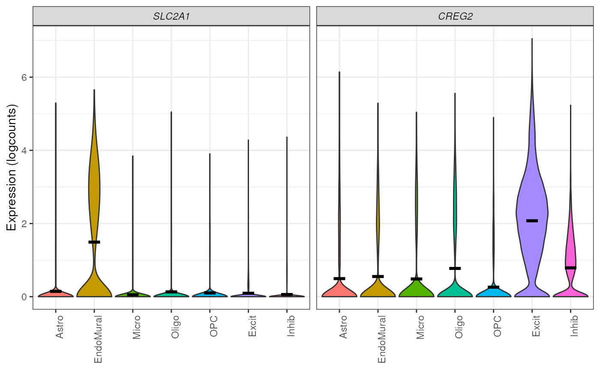
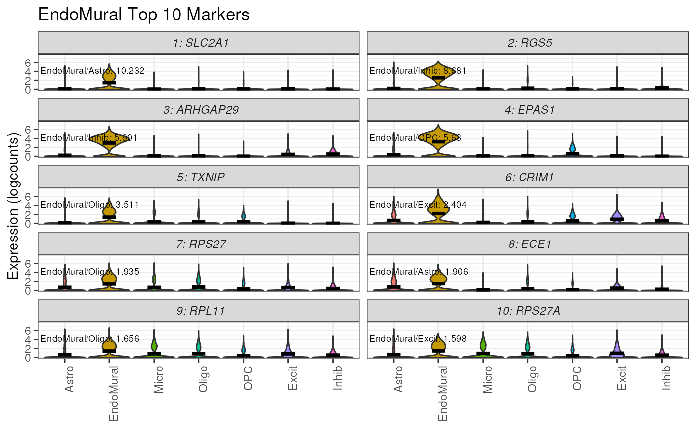

2. Finding Marker Genes with DeconvoBuddies
Louise Huuki-Myers
Lieber Institute for Brain Development, Johns Hopkins Medical Campuslahuuki@gmail.com
18 October 2024
Source:vignettes/Marker_Finding.Rmd
Marker_Finding.RmdIntroduction
What are Marker Genes?
Cell type marker genes have cell type specific expression, that is high expression in the target cell type, and low expression in all other cell types. Sub-setting the genes considered in a cell type deconvolution analysis helps reduce noise and can improve the accuracy of a deconvolution method.
How can we select marker genes?
There are several approaches to select marker genes.
One popular method is “1 vs. All” differential expression (Lun, McCarthy, and Marioni, n.d.), where genes are tested for differential expression between the target cell type, and a combined group of all “other” cell types. Statistically significant differentially expressed genes (DEGs) can be selected as a set of marker genes, DEGs can be ranked by high log fold change.
However in some cases 1vAll can select genes with high expression in non-target cell types, especially in cell types related to the target cell types (such as Neuron sub-types), or when there is a smaller number of cells in the cell type and the signal is disguised within the other group.
For example, in our snRNA-seq dataset from Human DLPFC (Huuki-Myers et al. 2024) selecting marker gene for the cell type Oligodendrocyte (Oligo), MBP has a high log fold change when testing by 1vALL (see illustration below). But, when the expression of MBP is observed by individual cell types there is also expression in the related cell types Microglia (Micro) and Oligodendrocyte precursor cells (OPC).

The Mean Ratio Method
To capture genes with more cell type specific expression and less
noise, we developed the Mean Ratio method. The
Mean Ratio method works by selecting genes with large
differences between gene expression in the target cell type and the
closest non-target cell type, by evaluating genes by their
MeanRatio metric.
We calculate the MeanRatio for a target cell type for
each gene by dividing the mean expression of the target cell by
the mean expression of the next highest non-target cell type.
Genes with the highest MeanRatio values are selected as
marker genes.
In the above example, Oligo is the target cell type.
Micro has the highest mean expression out of the other non-target (not
Oligo) cell types. The
MeanRatio = (mean expression Oligo) / (mean expression Micro),
for MBP MeanRatio = 2.68 for gene FOLH1
MeanRatio is much higher 21.6 showing FOLH1 is the better
marker gene (in contrast to ranking by 1vALL log FC). In the
violin plots you can see that expression of FOLH1 is much more
specific to Oligo than MBP, supporting the ranking by
MeanRatio.
We have implemented the Mean Ratio method
in this R package with the function get_mean_ratio(). This
vignette will cover our process for marker gene selection.
Goals of this Vignette
We will be demonstrating how to use DeconvoBuddies tools
when finding cell type marker genes in single cell RNA-seq data via the
MeanRatio method.
- Install and load required packages
- Download DLPFC snRNA-seq data
- Find MeanRatio marker genes with
DeconvoBuddies::get_mean_ratio() - Find 1vALL marker genes with
DeconvoBuddies::findMarkers_1vALL() - Compare marker gene selection
- Visualize marker genes expression with
DeconcoBuddies::plot_gene_express()and related functions
1. Install and load required packages
R is an open-source statistical environment which can be
easily modified to enhance its functionality via packages. DeconvoBuddies
is a R package available via the Bioconductor repository for packages.
R can be installed on any operating system from CRAN after which you can install
DeconvoBuddies
by using the following commands in your R session:
Install DeconvoBuddies
if (!requireNamespace("BiocManager", quietly = TRUE)) {
install.packages("BiocManager")
}
BiocManager::install("DeconvoBuddies")
## Check that you have a valid Bioconductor installation
BiocManager::valid()Load Other Packages
Let’s load the packages will use in this vignette.
## Packages for different types of RNA-seq data structures in R
library("SingleCellExperiment")
## For downloading data
library("spatialLIBD")
## Other helper packages for this vignette
library("dplyr")
library("ggplot2")
## Our main package
library("DeconvoBuddies")2. Download DLPFC snRNA-seq data.
Here we will download single nucleus RNA-seq data from the Human
DLPFC with 77k nuclei x 36k genes (Huuki-Myers et
al. 2024). This data is stored in a
SingleCellExperiment object. The nuclei in this dataset are
labeled by cell types at a few resolutions, we will focus on the “broad”
resolution that contains seven cell types.
## Use spatialLIBD to fetch the snRNA-seq dataset
sce_path_zip <- fetch_deconvo_data("sce")
#> 2024-10-18 19:06:03.235525 loading file /github/home/.cache/R/BiocFileCache/39a7e83491b_sce_DLPFC_annotated.zip%3Fdl%3D1
## unzip and load the data
sce_path <- unzip(sce_path_zip, exdir = tempdir())
sce <- HDF5Array::loadHDF5SummarizedExperiment(
file.path(tempdir(), "sce_DLPFC_annotated")
)
# lobstr::obj_size(sce)
# 172.28 MB
## exclude Ambiguous cell type
sce <- sce[, sce$cellType_broad_hc != "Ambiguous"]
sce$cellType_broad_hc <- droplevels(sce$cellType_broad_hc)
## Check the broad cell type distribution
table(sce$cellType_broad_hc)
#>
#> Astro EndoMural Micro Oligo OPC Excit Inhib
#> 3979 2157 1601 10894 1940 24809 11067
## We're going to subset to the first 5k genes to save memory
## In a real application you'll want to use the full dataset
sce <- sce[seq_len(5000), ]
## check the final dimensions of the dataset
dim(sce)
#> [1] 5000 564473. Find MeanRatio marker genes
To find Mean Ratio marker genes for the data in
sce we’ll use the function
DeconvoBuddies::get_mean_ratio(), this function takes a
SingleCellExperiment object sce the name of
the column in the colData(sce) that contains the cell type
annotations of interest (here we’ll use cellType_broad_hc),
and optionally you can also supply additional column names from the
rowData(sce) to add the gene_name and/or
gene_ensembl information to the table output of
get_mean_ratio.
# calculate the Mean Ratio of genes for each cell type in sce
marker_stats_MeanRatio <- get_mean_ratio(
sce = sce, # sce is the SingleCellExperiment with our data
assay_name = "logcounts", ## assay to use, we recommend logcounts [default]
cellType_col = "cellType_broad_hc", # column in colData with cell type info
gene_ensembl = "gene_id", # column in rowData with ensembl gene ids
gene_name = "gene_name" # column in rowData with gene names/symbols
)The function get_mean_ratio() returns a
tibble with the following columns:
-
geneis the name of the gene (from rownames(sce)). -
cellType.targetis the cell type we’re finding marker genes for. -
mean.targetis the mean expression ofgeneforcellType.target. -
cellType.2ndis the second highest non-target cell type. -
mean.2ndis the mean expression ofgeneforcellType.2nd. -
MeanRatiois the ratio ofmean.target/mean.2nd. -
MeanRatio.rankis the rank ofMeanRatiofor the cell type. -
MeanRatio.annois an annotation of theMeanRatiocalculation helpful for plotting. -
gene_ensembl&gene_nameoptional cols fromrowData(sce)specified by the user to add gene information
## Explore the tibble output
marker_stats_MeanRatio
#> # A tibble: 1,721 × 10
#> gene cellType.target mean.target cellType.2nd mean.2nd MeanRatio
#> <chr> <fct> <dbl> <fct> <dbl> <dbl>
#> 1 LYPD6B Inhib 1.20 Excit 0.0967 12.4
#> 2 GREM2 Inhib 1.20 Excit 0.271 4.44
#> 3 IGSF3 Inhib 0.899 Excit 0.241 3.72
#> 4 GALNT14 Inhib 1.86 Excit 0.503 3.69
#> 5 LYPD6 Inhib 1.09 Astro 0.435 2.51
#> 6 SLC35D1 Inhib 0.781 OPC 0.375 2.08
#> 7 FLVCR1 Inhib 0.576 Excit 0.336 1.72
#> 8 RAVER2 Inhib 1.09 OPC 0.651 1.68
#> 9 ARHGEF11 Inhib 1.81 Excit 1.10 1.64
#> 10 VAV3 Inhib 1.68 Astro 1.03 1.63
#> # ℹ 1,711 more rows
#> # ℹ 4 more variables: MeanRatio.rank <int>, MeanRatio.anno <chr>,
#> # gene_ensembl <chr>, gene_name <chr>
## genes with the highest MeanRatio are the best marker genes for each cell type
marker_stats_MeanRatio |>
filter(MeanRatio.rank == 1)
#> # A tibble: 7 × 10
#> gene cellType.target mean.target cellType.2nd mean.2nd MeanRatio
#> <chr> <fct> <dbl> <fct> <dbl> <dbl>
#> 1 LYPD6B Inhib 1.20 Excit 0.0967 12.4
#> 2 AC012494.1 Oligo 2.37 OPC 0.147 16.1
#> 3 MIR3681HG OPC 1.58 Excit 0.205 7.69
#> 4 AC011995.2 Excit 1.01 Inhib 0.135 7.51
#> 5 PRDM16 Astro 1.97 EndoMural 0.142 13.9
#> 6 SLC2A1 EndoMural 1.49 Astro 0.146 10.2
#> 7 LINC01141 Micro 1.57 Excit 0.0640 24.5
#> # ℹ 4 more variables: MeanRatio.rank <int>, MeanRatio.anno <chr>,
#> # gene_ensembl <chr>, gene_name <chr>4. Find 1vALL marker genes
To further explore cell type marker genes it can be helpful to also
calculate the 1vALL stats for the dataset. To help with this we have
included the function DeconvoBuddies::findMarkers_1vALL(),
which is a wrapper for scran::findMarkers() that iterates
through cell types and creates an table output in a compatible with the
output DeconvoBuddies::get_mean_ratio().
Similarity to get_mean_ratio this function requires the
sce object, cellType_col to define cell types,
and assay_name. But findMarkers_1vALL() also
takes a model (mod) to use as design in
scran::findMarkers(), in this example we will control for
donor which is stored as BrNum.
Note this function can take a bit of time to run.
## Run 1vALL DE to find markers for each cell type
marker_stats_1vAll <- findMarkers_1vAll(
sce = sce, # sce is the SingleCellExperiment with our data
assay_name = "counts",
cellType_col = "cellType_broad_hc", # column in colData with cell type info
mod = "~BrNum" # Control for donor stored in "BrNum" with mod
)The function findMarkers_1vALL() returns a
tibble with the following columns:
-
geneis the name of the gene (from rownames(sce)). -
logFCthe log fold change from the DE test -
log.p.valuethe log of the p-value of the DE test -
log.FDRthe log of the False Discovery Rate adjusted p.value -
std.logFCthe standard logFC -
cellType.targetthe cell type we’re finding marker genes for -
std.logFC.rankthe rank ofstd.logFCfor each cell type -
std.logFC.annois an annotation of thestd.logFCvalue helpful for plotting.
## Explore the tibble output
marker_stats_1vAll
#> # A tibble: 35,000 × 8
#> # Groups: cellType.target [7]
#> gene logFC log.p.value log.FDR std.logFC cellType.target std.logFC.rank
#> <chr> <dbl> <dbl> <dbl> <dbl> <fct> <int>
#> 1 SILC1 2.77 -6747. -6739. 1.42 Inhib 1
#> 2 LYPD6B 2.48 -6338. -6330. 1.37 Inhib 2
#> 3 LYPD6 2.18 -6147. -6140. 1.35 Inhib 3
#> 4 ALK 4.56 -5707. -5700. 1.30 Inhib 4
#> 5 WLS 3.26 -5111. -5104. 1.22 Inhib 5
#> 6 PLD5 5.85 -4711. -4704. 1.17 Inhib 6
#> 7 KIRREL1 1.04 -4539. -4532. 1.14 Inhib 7
#> 8 TRIM67 0.622 -4326. -4319. 1.11 Inhib 8
#> 9 GREM2 2.11 -4048. -4042. 1.07 Inhib 9
#> 10 IGSF3 1.27 -3783. -3777. 1.04 Inhib 10
#> # ℹ 34,990 more rows
#> # ℹ 1 more variable: std.logFC.anno <chr>
## genes with the highest MeanRatio are the best marker genes for each cell type
marker_stats_1vAll |>
filter(std.logFC.rank == 1)
#> # A tibble: 7 × 8
#> # Groups: cellType.target [7]
#> gene logFC log.p.value log.FDR std.logFC cellType.target std.logFC.rank
#> <chr> <dbl> <dbl> <dbl> <dbl> <fct> <int>
#> 1 SILC1 2.77 -6747. -6739. 1.42 Inhib 1
#> 2 RNF220 10.7 -8373. -8365. 1.52 Oligo 1
#> 3 BX284613 7.42 -12763. -12754. 4.20 OPC 1
#> 4 KIAA1211L 7.89 -8371. -8362. 1.23 Excit 1
#> 5 PRDM16 1.90 -8853. -8844. 2.38 Astro 1
#> 6 EPAS1 6.50 -9480. -9471. 3.31 EndoMural 1
#> 7 CSF3R 0.808 -9670. -9661. 3.86 Micro 1
#> # ℹ 1 more variable: std.logFC.anno <chr>As this is a differential expression test, you can create volcano plots to explore the outputs. üåã
Note that with the default option “up” for direction only
up-regulated genes are considered marker candidates, so all genes with
logFC<1 will have a p.value=0. As a results these plots will only
have the right half of the volcano shape. If you’d like all p-values set
findMarkers_1vALL(direction="any").
# Create volcano plots of DE stats from 1vALL
marker_stats_1vAll |>
ggplot(aes(logFC, -log.p.value)) +
geom_point() +
facet_wrap(~cellType.target) +
geom_vline(xintercept = c(1, -1), linetype = "dashed", color = "red")
5. Compare Marker Gene Selection
Let’s join the two marker_stats tables together to
compare the findings of the two methods.
Note as we are using a subset of data for this example, for some genes there is not enough data to test and 1vALL will have some missing results.
## join the two marker_stats tables
marker_stats <- marker_stats_MeanRatio |>
left_join(marker_stats_1vAll, by = join_by(gene, cellType.target))
## Check stats for our top genes
marker_stats |>
filter(MeanRatio.rank == 1) |>
select(gene, cellType.target, MeanRatio, MeanRatio.rank, std.logFC, std.logFC.rank)
#> # A tibble: 7 × 6
#> gene cellType.target MeanRatio MeanRatio.rank std.logFC std.logFC.rank
#> <chr> <fct> <dbl> <int> <dbl> <int>
#> 1 LYPD6B Inhib 12.4 1 1.37 2
#> 2 AC012494.1 Oligo 16.1 1 NA NA
#> 3 MIR3681HG OPC 7.69 1 1.42 11
#> 4 AC011995.2 Excit 7.51 1 NA NA
#> 5 PRDM16 Astro 13.9 1 2.38 1
#> 6 SLC2A1 EndoMural 10.2 1 2.30 4
#> 7 LINC01141 Micro 24.5 1 2.07 8Hockey Stick Plots
Plotting the values of Mean Ratio vs. standard log fold change (from
1vAll) we create what we call ‚Äúhockey stick plots‚Äù üèí. These plots help
visualize the distribution of MeanRatio and standard
logFC values.

Typically for a cell type see most genes have low Mean Ratio and low fold change, these genes are not marker genes (red box in illustration above on the bottom left side).
Genes with higher fold change from 1vALL are better marker gene candidates, but most have low MeanRatio values indicating that one or more non-target cell types have high expression for that gene, causing noise (orange box on the top left side).
Genes with high MeanRatio typically also have high 1vALL standard fold changes, these are cell type specific marker genes we are selecting for (green box on the top right side).
# create hockey stick plots to compare MeanRatio and standard logFC values.
marker_stats |>
ggplot(aes(MeanRatio, std.logFC)) +
geom_point() +
facet_wrap(~cellType.target)
#> Warning: Removed 29 rows containing missing values or values outside the scale range
#> (`geom_point()`).
We can see a “hockey stick” shape in most of the cell types, with a
few marker genes with high values for both logFC and
MeanRatio.
6. Visualize Marker Genes Expression
An important step for ensuring you have selected high quality marker
genes is to visualize their expression over the cell types in the
dataset. DeconvoBuddies has several functions to help
quickly plot gene expression at a few levels:
plot_gene_express() plots the expression of one or more
genes as a violin plot.
## plot expression of two genes from a list
plot_gene_express(
sce = sce,
category = "cellType_broad_hc",
genes = c("SLC2A1", "CREG2")
)
plot_marker_express() plots the top n marker genes for a
specified cell type based on the values from marker_stats.
Annotations for the details of the MeanRatio value +
calculation are added to each panel.
# plot the top 10 MeanRatio genes for Excit
plot_marker_express(
sce = sce,
stats = marker_stats,
cell_type = "Excit",
n_genes = 10,
cellType_col = "cellType_broad_hc"
)
In these violin plots we can see these genes have high expression in the target cell type Excit , and mostly low expression nuclei in the other cell types, sometimes even no expression.
This function defaults to selecting genes by the MeanRatio stats, but can also be used to plot the 1vAll genes.
# plot the top 10 1vAll genes for Excit
plot_marker_express(
sce = sce,
stats = marker_stats,
cell_type = "Excit",
n_genes = 10,
rank_col = "std.logFC.rank", ## use logFC cols from 1vALL
anno_col = "std.logFC.anno",
cellType_col = "cellType_broad_hc"
)
We can see in the top 1vALL genes there is some expression of these genes in Inhib nuclei in addition to the target cell type Excit.
plot_marker_express_ALL() plots the top marker genes for
all cell types. This is a quick and easy way to look at the the top
markers in your dataset, which is an important step and can help
identify genes with multimodal distributions that may confound the
MeanRatio method.
# plot the top 10 1vAll genes for all cell types
print(plot_marker_express_ALL(
sce = sce,
stats = marker_stats,
n_genes = 10,
cellType_col = "cellType_broad_hc"
))
#> [[1]]#>
#> [[2]]
#>
#> [[3]]#>
#> [[4]]#>
#> [[5]]#>
#> [[6]]#>
#> [[7]]The violin plots can also be directly printed to a PDF file using the
built in argument
plot_marker_express_ALL(pdf = "my_marker_genes.pdf") for
portability and easy sharing.
Summary
In this vignette we covered the importance of finding marker genes,
and introduced our method for finding cell type specific genes
MeanRatio. We covered how to find and compare
MeanRatio marker genes with get_mean_ratio(), and
1vALL marker genes with findMarkers_1vALL(). And
finally, how to visualize the expression of these marker genes with
plot_marker_express() and related functions.
Next Steps
For an example of how to use these marker genes in a deconvolution workflow, check out Vignette: Deconvolution Benchmark in Human DLPFC.
We hope this vignette and DeconvoBuddies helps you with your research goals! Thanks for reading üòÅ
Reproducibility
The DeconvoBuddies package (Huuki-Myers, Maynard, Hicks, Zandi, Kleinman, Hyde, Goes, and Collado-Torres, 2024) was made possible thanks to:
- R (R Core Team, 2024)
- BiocStyle (Oleś, 2024)
- knitr (Xie, 2024)
- RefManageR (McLean, 2017)
- rmarkdown (Allaire, Xie, Dervieux, McPherson, Luraschi, Ushey, Atkins, Wickham, Cheng, Chang, and Iannone, 2024)
- sessioninfo (Wickham, Chang, Flight, Müller, and Hester, 2021)
- testthat (Wickham, 2011)
This package was developed using biocthis.
Code for creating the vignette
## Create the vignette
library("rmarkdown")
system.time(render("Marker_Finding.Rmd", "BiocStyle::html_document"))
## Extract the R code
library("knitr")
knit("Marker_Finding.Rmd", tangle = TRUE)Date the vignette was generated.
#> [1] "2024-10-18 19:08:14 UTC"Wallclock time spent generating the vignette.
#> Time difference of 2.398 minsR session information.
#> ─ Session info ───────────────────────────────────────────────────────────────────────────────────────────────────────
#> setting value
#> version R version 4.4.1 (2024-06-14)
#> os Ubuntu 22.04.5 LTS
#> system x86_64, linux-gnu
#> ui X11
#> language en
#> collate en_US.UTF-8
#> ctype en_US.UTF-8
#> tz UTC
#> date 2024-10-18
#> pandoc 3.4 @ /usr/bin/ (via rmarkdown)
#>
#> ─ Packages ───────────────────────────────────────────────────────────────────────────────────────────────────────────
#> package * version date (UTC) lib source
#> abind 1.4-8 2024-09-12 [1] RSPM (R 4.4.0)
#> AnnotationDbi 1.67.0 2024-05-01 [1] Bioconductor 3.20 (R 4.4.0)
#> AnnotationHub 3.13.3 2024-08-19 [1] Bioconductor 3.20 (R 4.4.1)
#> attempt 0.3.1 2020-05-03 [1] RSPM (R 4.4.0)
#> backports 1.5.0 2024-05-23 [1] RSPM (R 4.4.0)
#> beachmat 2.21.8 2024-10-17 [1] Bioconductor 3.20 (R 4.4.1)
#> beeswarm 0.4.0 2021-06-01 [1] RSPM (R 4.4.0)
#> benchmarkme 1.0.8 2022-06-12 [1] RSPM (R 4.4.0)
#> benchmarkmeData 1.0.4 2020-04-23 [1] RSPM (R 4.4.0)
#> bibtex 0.5.1 2023-01-26 [1] RSPM (R 4.4.0)
#> Biobase * 2.65.1 2024-08-28 [1] Bioconductor 3.20 (R 4.4.1)
#> BiocFileCache 2.13.2 2024-10-11 [1] Bioconductor 3.20 (R 4.4.1)
#> BiocGenerics * 0.51.3 2024-10-02 [1] Bioconductor 3.20 (R 4.4.1)
#> BiocIO 1.15.2 2024-08-23 [1] Bioconductor 3.20 (R 4.4.1)
#> BiocManager 1.30.25 2024-08-28 [2] CRAN (R 4.4.1)
#> BiocNeighbors 1.99.2 2024-10-07 [1] Bioconductor 3.20 (R 4.4.1)
#> BiocParallel 1.39.0 2024-05-01 [1] Bioconductor 3.20 (R 4.4.0)
#> BiocSingular 1.21.4 2024-09-22 [1] Bioconductor 3.20 (R 4.4.1)
#> BiocStyle * 2.33.1 2024-06-12 [1] Bioconductor 3.20 (R 4.4.0)
#> BiocVersion 3.20.0 2024-05-01 [2] Bioconductor 3.20 (R 4.4.1)
#> Biostrings 2.73.2 2024-09-26 [1] Bioconductor 3.20 (R 4.4.1)
#> bit 4.5.0 2024-09-20 [1] RSPM (R 4.4.0)
#> bit64 4.5.2 2024-09-22 [1] RSPM (R 4.4.0)
#> bitops 1.0-9 2024-10-03 [1] RSPM (R 4.4.0)
#> blob 1.2.4 2023-03-17 [1] RSPM (R 4.4.0)
#> bluster 1.15.1 2024-09-06 [1] Bioconductor 3.20 (R 4.4.1)
#> bookdown 0.41 2024-10-16 [1] RSPM (R 4.4.0)
#> bslib 0.8.0 2024-07-29 [2] RSPM (R 4.4.0)
#> cachem 1.1.0 2024-05-16 [2] RSPM (R 4.4.0)
#> cli 3.6.3 2024-06-21 [2] RSPM (R 4.4.0)
#> cluster 2.1.6 2023-12-01 [3] CRAN (R 4.4.1)
#> codetools 0.2-20 2024-03-31 [3] CRAN (R 4.4.1)
#> colorspace 2.1-1 2024-07-26 [1] RSPM (R 4.4.0)
#> config 0.3.2 2023-08-30 [1] RSPM (R 4.4.0)
#> cowplot 1.1.3 2024-01-22 [1] RSPM (R 4.4.0)
#> crayon 1.5.3 2024-06-20 [2] RSPM (R 4.4.0)
#> curl 5.2.3 2024-09-20 [2] RSPM (R 4.4.0)
#> data.table 1.16.2 2024-10-10 [1] RSPM (R 4.4.0)
#> DBI 1.2.3 2024-06-02 [1] RSPM (R 4.4.0)
#> dbplyr 2.5.0 2024-03-19 [1] RSPM (R 4.4.0)
#> DeconvoBuddies * 0.99.3 2024-10-18 [1] Bioconductor
#> DelayedArray 0.31.14 2024-10-03 [1] Bioconductor 3.20 (R 4.4.1)
#> desc 1.4.3 2023-12-10 [2] RSPM (R 4.4.0)
#> digest 0.6.37 2024-08-19 [2] RSPM (R 4.4.0)
#> doParallel 1.0.17 2022-02-07 [1] RSPM (R 4.4.0)
#> dotCall64 1.2 2024-10-04 [1] RSPM (R 4.4.0)
#> dplyr * 1.1.4 2023-11-17 [1] RSPM (R 4.4.0)
#> dqrng 0.4.1 2024-05-28 [1] RSPM (R 4.4.0)
#> DT 0.33 2024-04-04 [1] RSPM (R 4.4.0)
#> edgeR 4.3.19 2024-10-11 [1] Bioconductor 3.20 (R 4.4.1)
#> evaluate 1.0.1 2024-10-10 [2] RSPM (R 4.4.0)
#> ExperimentHub 2.13.1 2024-07-31 [1] Bioconductor 3.20 (R 4.4.1)
#> fansi 1.0.6 2023-12-08 [2] RSPM (R 4.4.0)
#> farver 2.1.2 2024-05-13 [1] RSPM (R 4.4.0)
#> fastmap 1.2.0 2024-05-15 [2] RSPM (R 4.4.0)
#> fields 16.3 2024-09-30 [1] RSPM (R 4.4.0)
#> filelock 1.0.3 2023-12-11 [1] RSPM (R 4.4.0)
#> foreach 1.5.2 2022-02-02 [1] RSPM (R 4.4.0)
#> fs 1.6.4 2024-04-25 [2] RSPM (R 4.4.0)
#> generics 0.1.3 2022-07-05 [1] RSPM (R 4.4.0)
#> GenomeInfoDb * 1.41.2 2024-10-02 [1] Bioconductor 3.20 (R 4.4.1)
#> GenomeInfoDbData 1.2.13 2024-10-11 [1] Bioconductor
#> GenomicAlignments 1.41.0 2024-05-01 [1] Bioconductor 3.20 (R 4.4.0)
#> GenomicRanges * 1.57.2 2024-10-09 [1] Bioconductor 3.20 (R 4.4.1)
#> ggbeeswarm 0.7.2 2023-04-29 [1] RSPM (R 4.4.0)
#> ggplot2 * 3.5.1 2024-04-23 [1] RSPM (R 4.4.0)
#> ggrepel 0.9.6 2024-09-07 [1] RSPM (R 4.4.0)
#> glue 1.8.0 2024-09-30 [2] RSPM (R 4.4.0)
#> golem 0.5.1 2024-08-27 [1] RSPM (R 4.4.0)
#> gridExtra 2.3 2017-09-09 [1] RSPM (R 4.4.0)
#> gtable 0.3.5 2024-04-22 [1] RSPM (R 4.4.0)
#> HDF5Array 1.33.8 2024-10-04 [1] Bioconductor 3.20 (R 4.4.1)
#> highr 0.11 2024-05-26 [2] RSPM (R 4.4.0)
#> htmltools 0.5.8.1 2024-04-04 [2] RSPM (R 4.4.0)
#> htmlwidgets 1.6.4 2023-12-06 [2] RSPM (R 4.4.0)
#> httpuv 1.6.15 2024-03-26 [2] RSPM (R 4.4.0)
#> httr 1.4.7 2023-08-15 [1] RSPM (R 4.4.0)
#> igraph 2.0.3 2024-03-13 [1] RSPM (R 4.4.0)
#> IRanges * 2.39.2 2024-07-17 [1] Bioconductor 3.20 (R 4.4.1)
#> irlba 2.3.5.1 2022-10-03 [1] RSPM (R 4.4.0)
#> iterators 1.0.14 2022-02-05 [1] RSPM (R 4.4.0)
#> jquerylib 0.1.4 2021-04-26 [2] RSPM (R 4.4.0)
#> jsonlite 1.8.9 2024-09-20 [2] RSPM (R 4.4.0)
#> KEGGREST 1.45.1 2024-06-17 [1] Bioconductor 3.20 (R 4.4.0)
#> knitr 1.48 2024-07-07 [2] RSPM (R 4.4.0)
#> labeling 0.4.3 2023-08-29 [1] RSPM (R 4.4.0)
#> later 1.3.2 2023-12-06 [2] RSPM (R 4.4.0)
#> lattice 0.22-6 2024-03-20 [3] CRAN (R 4.4.1)
#> lazyeval 0.2.2 2019-03-15 [1] RSPM (R 4.4.0)
#> lifecycle 1.0.4 2023-11-07 [2] RSPM (R 4.4.0)
#> limma 3.61.12 2024-09-30 [1] Bioconductor 3.20 (R 4.4.1)
#> locfit 1.5-9.10 2024-06-24 [1] RSPM (R 4.4.0)
#> lubridate 1.9.3 2023-09-27 [1] RSPM (R 4.4.0)
#> magick 2.8.5 2024-09-20 [1] RSPM (R 4.4.0)
#> magrittr 2.0.3 2022-03-30 [2] RSPM (R 4.4.0)
#> maps 3.4.2 2023-12-15 [1] RSPM (R 4.4.0)
#> Matrix 1.7-0 2024-04-26 [3] CRAN (R 4.4.1)
#> MatrixGenerics * 1.17.0 2024-05-01 [1] Bioconductor 3.20 (R 4.4.0)
#> matrixStats * 1.4.1 2024-09-08 [1] RSPM (R 4.4.0)
#> memoise 2.0.1 2021-11-26 [2] RSPM (R 4.4.0)
#> metapod 1.13.0 2024-05-01 [1] Bioconductor 3.20 (R 4.4.0)
#> mime 0.12 2021-09-28 [2] RSPM (R 4.4.0)
#> munsell 0.5.1 2024-04-01 [1] RSPM (R 4.4.0)
#> paletteer 1.6.0 2024-01-21 [1] RSPM (R 4.4.0)
#> pillar 1.9.0 2023-03-22 [2] RSPM (R 4.4.0)
#> pkgconfig 2.0.3 2019-09-22 [2] RSPM (R 4.4.0)
#> pkgdown 2.1.1 2024-09-17 [1] RSPM (R 4.4.0)
#> plotly 4.10.4 2024-01-13 [1] RSPM (R 4.4.0)
#> plyr 1.8.9 2023-10-02 [1] RSPM (R 4.4.0)
#> png 0.1-8 2022-11-29 [1] RSPM (R 4.4.0)
#> promises 1.3.0 2024-04-05 [2] RSPM (R 4.4.0)
#> purrr 1.0.2 2023-08-10 [2] RSPM (R 4.4.0)
#> R6 2.5.1 2021-08-19 [2] RSPM (R 4.4.0)
#> rafalib 1.0.0 2015-08-09 [1] RSPM (R 4.4.0)
#> ragg 1.3.3 2024-09-11 [2] RSPM (R 4.4.0)
#> rappdirs 0.3.3 2021-01-31 [2] RSPM (R 4.4.0)
#> RColorBrewer 1.1-3 2022-04-03 [1] RSPM (R 4.4.0)
#> Rcpp 1.0.13 2024-07-17 [2] RSPM (R 4.4.0)
#> RCurl 1.98-1.16 2024-07-11 [1] RSPM (R 4.4.0)
#> RefManageR * 1.4.0 2022-09-30 [1] RSPM (R 4.4.0)
#> rematch2 2.1.2 2020-05-01 [2] RSPM (R 4.4.0)
#> reshape2 1.4.4 2020-04-09 [1] RSPM (R 4.4.0)
#> restfulr 0.0.15 2022-06-16 [1] RSPM (R 4.4.0)
#> rhdf5 2.49.0 2024-05-01 [1] Bioconductor 3.20 (R 4.4.0)
#> rhdf5filters 1.17.0 2024-05-01 [1] Bioconductor 3.20 (R 4.4.0)
#> Rhdf5lib 1.27.0 2024-05-01 [1] Bioconductor 3.20 (R 4.4.0)
#> rjson 0.2.23 2024-09-16 [1] RSPM (R 4.4.0)
#> rlang 1.1.4 2024-06-04 [2] RSPM (R 4.4.0)
#> rmarkdown 2.28 2024-08-17 [2] RSPM (R 4.4.0)
#> Rsamtools 2.21.2 2024-09-26 [1] Bioconductor 3.20 (R 4.4.1)
#> RSQLite 2.3.7 2024-05-27 [1] RSPM (R 4.4.0)
#> rsvd 1.0.5 2021-04-16 [1] RSPM (R 4.4.0)
#> rtracklayer 1.65.0 2024-05-01 [1] Bioconductor 3.20 (R 4.4.0)
#> S4Arrays 1.5.11 2024-10-14 [1] Bioconductor 3.20 (R 4.4.1)
#> S4Vectors * 0.43.2 2024-07-17 [1] Bioconductor 3.20 (R 4.4.1)
#> sass 0.4.9 2024-03-15 [2] RSPM (R 4.4.0)
#> ScaledMatrix 1.13.0 2024-05-01 [1] Bioconductor 3.20 (R 4.4.0)
#> scales 1.3.0 2023-11-28 [1] RSPM (R 4.4.0)
#> scater 1.33.4 2024-07-21 [1] Bioconductor 3.20 (R 4.4.1)
#> scran 1.33.2 2024-09-06 [1] Bioconductor 3.20 (R 4.4.1)
#> scuttle 1.15.4 2024-08-14 [1] Bioconductor 3.20 (R 4.4.1)
#> sessioninfo * 1.2.2 2021-12-06 [2] RSPM (R 4.4.0)
#> shiny 1.9.1 2024-08-01 [2] RSPM (R 4.4.0)
#> shinyWidgets 0.8.7 2024-09-23 [1] RSPM (R 4.4.0)
#> SingleCellExperiment * 1.27.2 2024-05-24 [1] Bioconductor 3.20 (R 4.4.0)
#> spam 2.11-0 2024-10-03 [1] RSPM (R 4.4.0)
#> SparseArray 1.5.45 2024-10-17 [1] Bioconductor 3.20 (R 4.4.1)
#> SpatialExperiment * 1.15.1 2024-06-20 [1] Bioconductor 3.20 (R 4.4.0)
#> spatialLIBD * 1.17.8 2024-07-25 [1] Bioconductor 3.20 (R 4.4.1)
#> statmod 1.5.0 2023-01-06 [1] RSPM (R 4.4.0)
#> stringi 1.8.4 2024-05-06 [2] RSPM (R 4.4.0)
#> stringr 1.5.1 2023-11-14 [2] RSPM (R 4.4.0)
#> SummarizedExperiment * 1.35.4 2024-10-09 [1] Bioconductor 3.20 (R 4.4.1)
#> systemfonts 1.1.0 2024-05-15 [2] RSPM (R 4.4.0)
#> textshaping 0.4.0 2024-05-24 [2] RSPM (R 4.4.0)
#> tibble 3.2.1 2023-03-20 [2] RSPM (R 4.4.0)
#> tidyr 1.3.1 2024-01-24 [1] RSPM (R 4.4.0)
#> tidyselect 1.2.1 2024-03-11 [1] RSPM (R 4.4.0)
#> timechange 0.3.0 2024-01-18 [1] RSPM (R 4.4.0)
#> UCSC.utils 1.1.0 2024-05-01 [1] Bioconductor 3.20 (R 4.4.0)
#> utf8 1.2.4 2023-10-22 [2] RSPM (R 4.4.0)
#> vctrs 0.6.5 2023-12-01 [2] RSPM (R 4.4.0)
#> vipor 0.4.7 2023-12-18 [1] RSPM (R 4.4.0)
#> viridis 0.6.5 2024-01-29 [1] RSPM (R 4.4.0)
#> viridisLite 0.4.2 2023-05-02 [1] RSPM (R 4.4.0)
#> withr 3.0.1 2024-07-31 [2] RSPM (R 4.4.0)
#> xfun 0.48 2024-10-03 [2] RSPM (R 4.4.0)
#> XML 3.99-0.17 2024-06-25 [1] RSPM (R 4.4.0)
#> xml2 1.3.6 2023-12-04 [2] RSPM (R 4.4.0)
#> xtable 1.8-4 2019-04-21 [2] RSPM (R 4.4.0)
#> XVector 0.45.0 2024-05-01 [1] Bioconductor 3.20 (R 4.4.0)
#> yaml 2.3.10 2024-07-26 [2] RSPM (R 4.4.0)
#> zlibbioc 1.51.1 2024-06-05 [1] Bioconductor 3.20 (R 4.4.0)
#>
#> [1] /__w/_temp/Library
#> [2] /usr/local/lib/R/site-library
#> [3] /usr/local/lib/R/library
#>
#> ──────────────────────────────────────────────────────────────────────────────────────────────────────────────────────Bibliography
This vignette was generated using BiocStyle (Oleś, 2024) with knitr (Xie, 2024) and rmarkdown (Allaire, Xie, Dervieux et al., 2024) running behind the scenes.
Citations made with RefManageR (McLean, 2017).
[1] J. Allaire, Y. Xie, C. Dervieux, et al. rmarkdown: Dynamic Documents for R. R package version 2.28. 2024. URL: https://github.com/rstudio/rmarkdown.
[2] L. A. Huuki-Myers, K. R. Maynard, S. C. Hicks, et al. DeconvoBuddies: a R/Bioconductor package with deconvolution helper functions. https://github.com/LieberInstitute/DeconvoBuddies/DeconvoBuddies - R package version 0.99.3. 2024. DOI: 10.18129/B9.bioc.DeconvoBuddies. URL: http://www.bioconductor.org/packages/DeconvoBuddies.
[3] M. W. McLean. “RefManageR: Import and Manage BibTeX and BibLaTeX References in R”. In: The Journal of Open Source Software (2017). DOI: 10.21105/joss.00338.
[4] A. Oleś. BiocStyle: Standard styles for vignettes and other Bioconductor documents. R package version 2.33.1. 2024. DOI: 10.18129/B9.bioc.BiocStyle. URL: https://bioconductor.org/packages/BiocStyle.
[5] R Core Team. R: A Language and Environment for Statistical Computing. R Foundation for Statistical Computing. Vienna, Austria, 2024. URL: https://www.R-project.org/.
[6] H. Wickham. “testthat: Get Started with Testing”. In: The R Journal 3 (2011), pp. 5–10. URL: https://journal.r-project.org/archive/2011-1/RJournal_2011-1_Wickham.pdf.
[7] H. Wickham, W. Chang, R. Flight, et al. sessioninfo: R Session Information. R package version 1.2.2, https://r-lib.github.io/sessioninfo/. 2021. URL: https://github.com/r-lib/sessioninfo#readme.
[8] Y. Xie. knitr: A General-Purpose Package for Dynamic Report Generation in R. R package version 1.48. 2024. URL: https://yihui.org/knitr/.